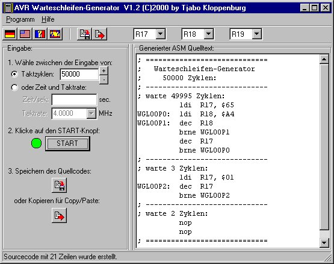
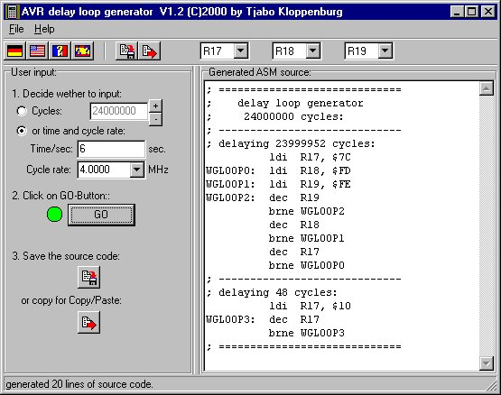

(C)2000 by Tjabo Kloppenburg
Jeder darf die Software downloaden und benutzen.
Nur die kostenlose Weitergabe ist gestattet.
Der Autor übernimmt keinerlei Garantie für die Funktionsweise
des Programms!
Der Autor übernimmt keinerlei Haftung im Schadensfalle!
Changes:
Version 1.2:
Click here for english text.
Ich habe ein Programm geschrieben, mit dem man recht einfach Warteschleifen für ATMEL AVR-Controllers erzeugen kann, die ohne Timer auskommen. Das Programm ist mehrsprachlich - durch Klick auf eine der Flaggen kann man die GUI auf eine andere Sprache einstellen. Neu: das Programm merkt sich die Einstellung. Was mir noch fehlt sind die Texte für französisch und spanisch -- wenn mir die jemand per Email schickt, baue ich die sofort ein.
Um eine Warteschleife zu erzeugen geht man einfach so vor, wie es in
der linken Fensterhälfte des Programmfensters steht:
1. Zuerst gibt man die Taktzyklen an, die von der Warteschleife verbraten
werden sollen. Oder wahlweise die Sekunden.
2. Klick auf den START-Button.
3. Den erzeugten Quellcode speichern, oder ins ClipBoard kopieren (für
Copy/Paste).
Fertig!
Im Quelltexteditor kann man den Warteschleifen-Code dann einfach per Shift-Einfg einfügen.
Welche Register für die Schleife verwendet werden sollen, stellt man oben recht ein:

English text for non germans:
Send french and spanisch texts and I'll put them in the program!
To generate a delay loop in ASM source code just follow the steps in
the left part of the window:
1. Enter the cycles the delay loop shall have. (in a future version
you'll be able to enter the delay time in seconds).
2. Click the GO-Button
3. Save the generated code to a file or copy the source to your ClipBoard
(Copy/Paste).
That's it.
Watch out for register collisions in your ASM source!
You may download, use and copy the programs for free! See german copyright infos at top of page for details.
